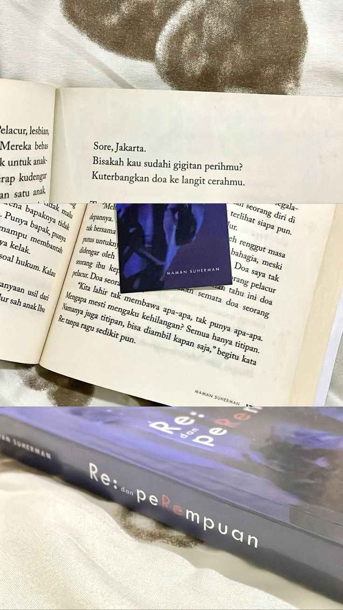
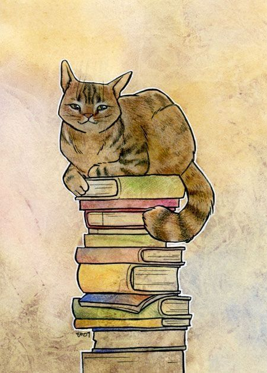

Best Books
of the Month
● ●

Pengungkapan Realitas
Keindahan Gaya Penulisan

Realita Yang Menyentuh Hati
Realita paling menyentuh dalam *Re: dan Perempuan* karya Maman Suherman adalah potret getir perempuan yang hidup tanpa pilihan...